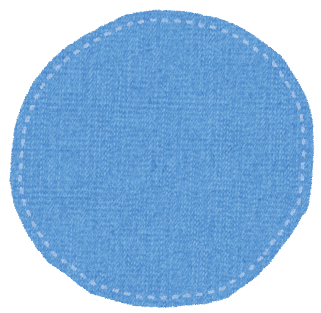

2. 本人が望んでいる医療行為を目指しましょう。
病院では、家族が医療行為について判断を求められることがあります。
例えば…
- 急変したら、心臓マッサージ／血圧を上げる薬の投与／人工呼吸などの救命措置をしますか？
- 口からものを食べられないときに、胃ろう／経鼻経管栄養／中心静脈栄養／点滴をしますか？
- 腎臓の働きが悪くなったときに、人工透析をしますか？
 家族だけで重大な医療行為を決めるのはとても難しいです。ふだんからよく話し合い、本人の意思や希望を確認しておきましょう。
家族だけで重大な医療行為を決めるのはとても難しいです。ふだんからよく話し合い、本人の意思や希望を確認しておきましょう。

話し合いのコツ!

- テレビや身近な話題をきっかけにして、本人の意思や希望を確認する
- 本人の意思や希望は、そのつど記録しておく
- 家族みんなで情報を共有する